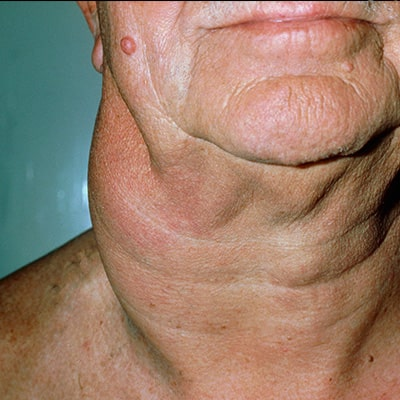
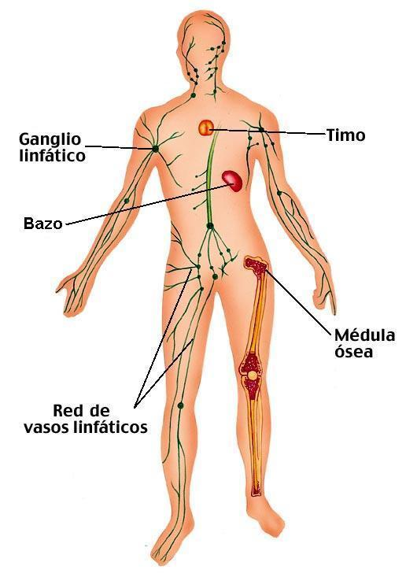

Linfoma de Hodgkin
Descripción
El linfoma de Hodgkin, anteriormente conocido como enfermedad de Hodgkin, es un tipo de cáncer que afecta al sistema linfático, el cual forma parte del sistema inmunitario del cuerpo. En esta enfermedad, las células del sistema linfático crecen de manera anormal y pueden diseminarse más allá de él. Se caracteriza microscópicamente por la presencia de un tipo específico de células anormales llamadas Reed-Sternberg cells.

Mapa Interactivo del Sistema Linfático
Explora las principales zonas de agrupación de ganglios linfáticos haciendo clic en la imagen.

Causas
No se conoce con exactitud qué causa el linfoma de Hodgkin. Comienza cuando un linfocito B (un glóbulo blanco que combate las infecciones) desarrolla una mutación en su ADN. Factores de riesgo conocidos incluyen:
- Antecedentes de infección por el virus de Epstein-Barr (VEB, el virus que causa la mononucleosis).
- Tener antecedentes familiares de linfoma de Hodgkin.
- Tener un sistema inmunitario debilitado (como en el caso de la infección por VIH).
Síntomas
El síntoma más frecuente es la inflamación indolora de los ganglios linfáticos. Otros síntomas sistémicos (conocidos como "síntomas B") incluyen:
- Fiebre persistente sin motivo aparente.
- Sudores nocturnos intensos.
- Pérdida de peso involuntaria grave.
- Picazón intensa y generalizada en la piel.
- Fatiga persistente.
Pruebas y exámenes
El diagnóstico definitivo requiere la extracción de una muestra de tejido. Las pruebas incluyen:
- Biopsia de ganglio linfático: Para buscar la presencia de las células de Reed-Sternberg.
- Análisis de sangre: Para evaluar la función de los órganos y buscar signos de la enfermedad en la sangre.
- Pruebas de diagnóstico por imagen: Como radiografías, tomografías computarizadas (TC) y tomografías por emisión de positrones (PET) para determinar en qué estadio se encuentra el cáncer.
Tratamiento
El linfoma de Hodgkin se considera una de las formas de cáncer más tratables y curables. Las principales opciones de tratamiento son la quimioterapia, la radioterapia o una combinación de ambas. En casos de recaída, se puede recurrir a la inmunoterapia o al trasplante de células madre.
Expectativas (Pronóstico)
Las expectativas para los pacientes con linfoma de Hodgkin son, en general, excelentes. Más del 80% de los pacientes logran la curación completa, incluso en etapas avanzadas de la enfermedad, gracias a las terapias modernas. Sin embargo, es necesario realizar un seguimiento médico a largo plazo para vigilar posibles efectos secundarios de los tratamientos.